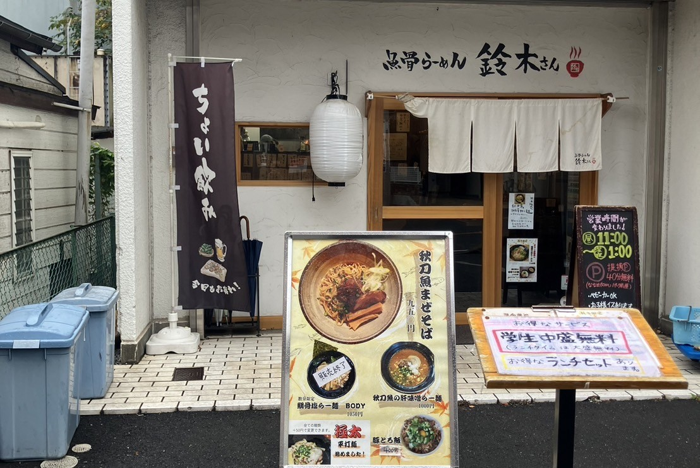
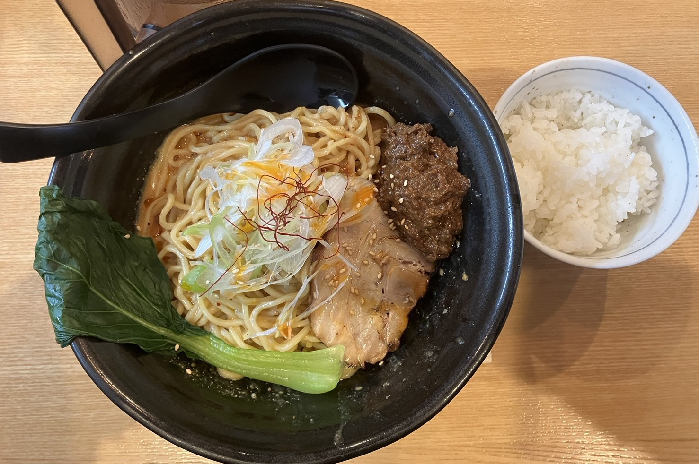
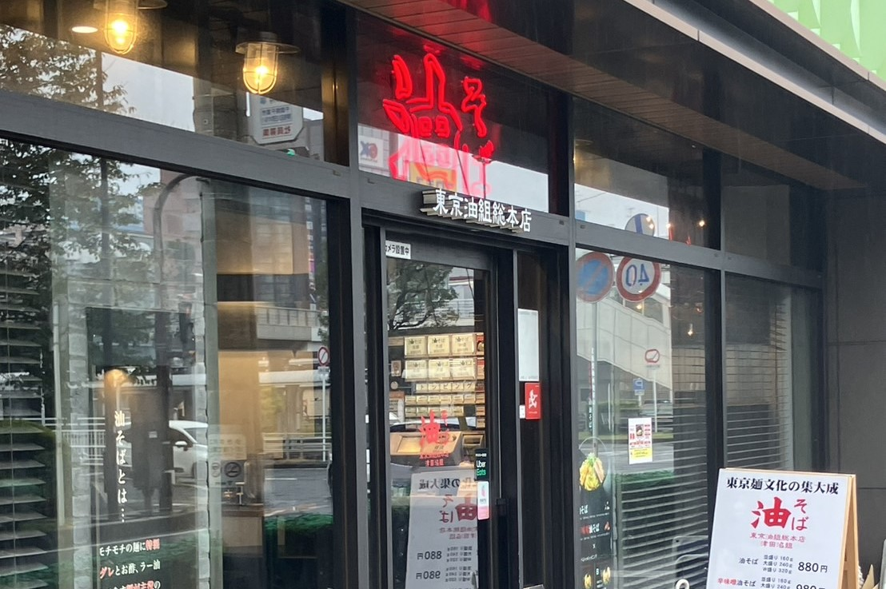
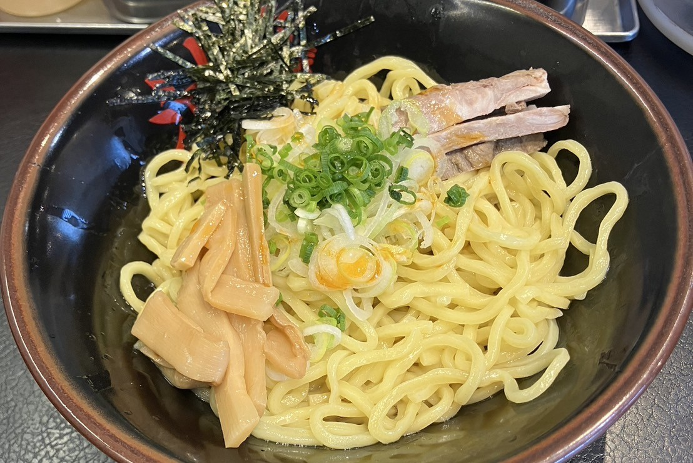
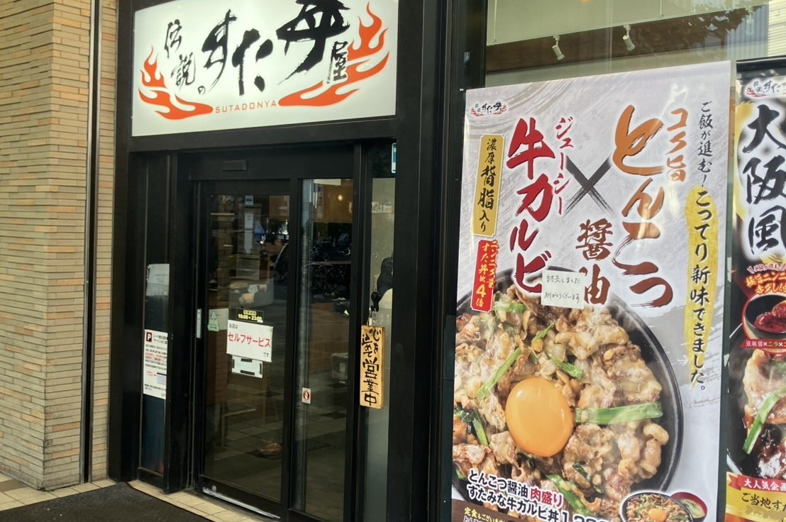
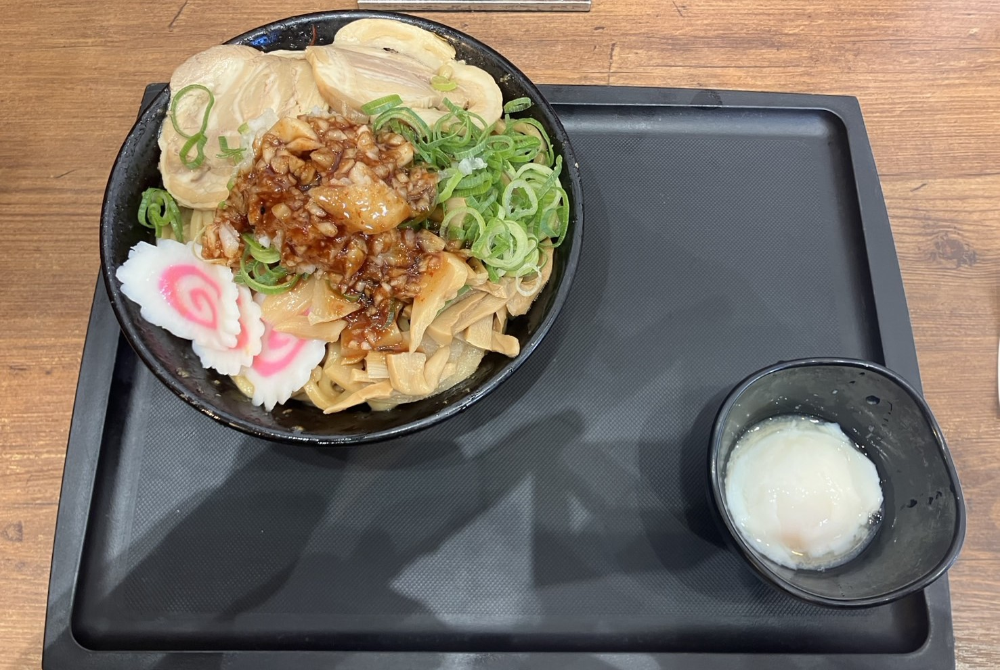
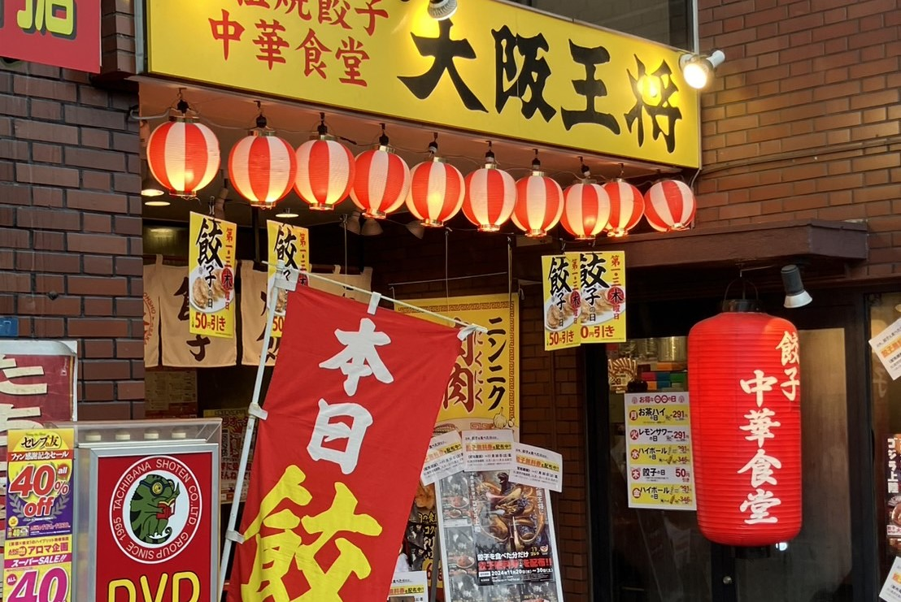
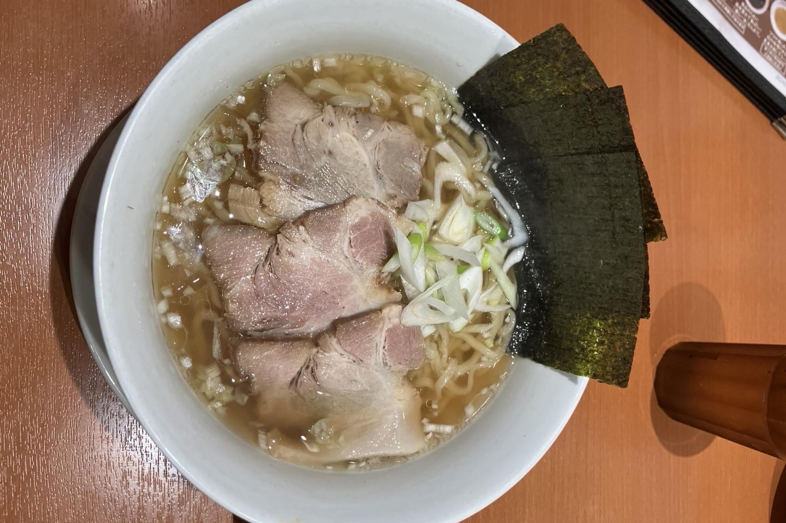

| 特徴 | さんまや鯛の出汁を使った魚骨ラーメンが楽しめるお店。 |
|---|---|
| アクセス | 約5分 |
| 住所 | 千葉県船橋市前原西2-32-10 |
| 電話番号 | 047-478-1175 |
| 営業時間・定休日 |
|
| 公式サイト | 魚骨ラーメン 鈴木さん |


| 特徴 | こってりとした油そばが楽しめるお店。 |
|---|---|
| アクセス | 約5分 |
| 住所 | 千葉県習志野市谷津7-7-1 Loharu津田沼1F |
| 電話番号 | 047-407-4440 |
| 営業時間・定休日 |
|
| 公式サイト | 東京油組総本店 |


| 特徴 | ボリュームたっぷりの油そばが人気。 |
|---|---|
| アクセス | 約6分 |
| 住所 | 千葉県習志野市津田沼1-3-1 ミーナ津田沼1F |
| 電話番号 | 047-411-9313 |
| 営業時間・定休日 |
|
| 公式サイト | 伝説のすた丼屋 |


| 特徴 | 餃子とラーメンが楽しめる中華料理店。 |
|---|---|
| アクセス | 約5分 |
| 住所 | 千葉県習志野市津田沼1-2-7 ウェルズ21津田沼ビル1F |
| 電話番号 | 047-409-0070 |
| 営業時間・定休日 |
|
| 公式サイト | 大阪王将 |